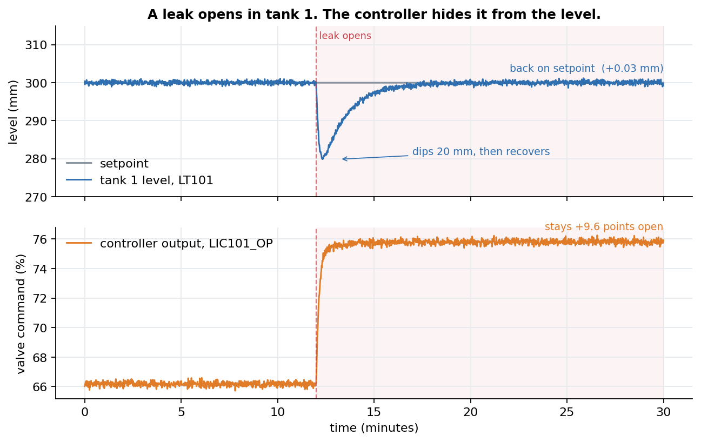
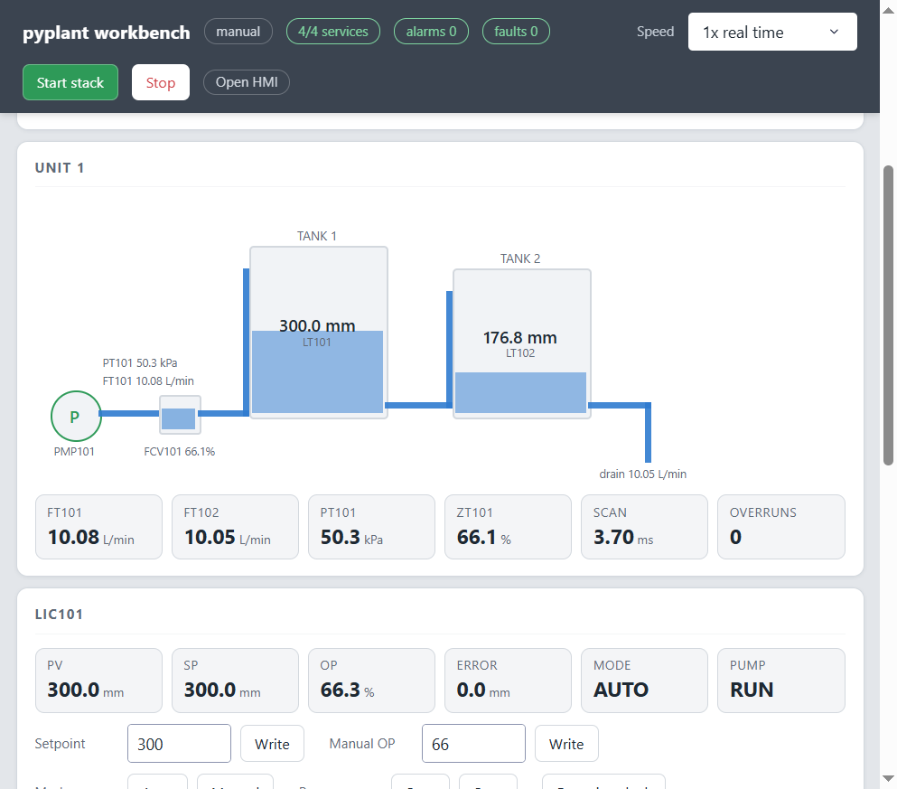
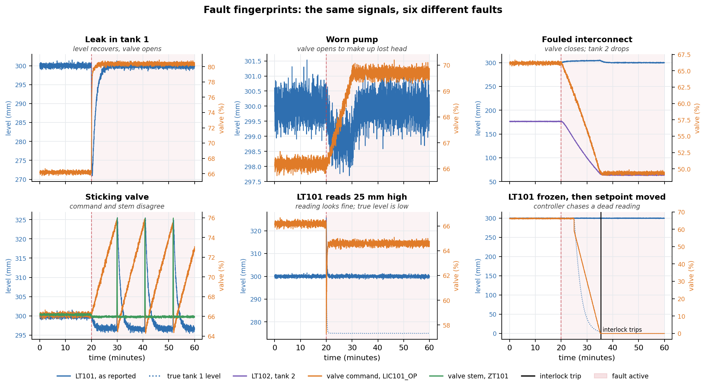
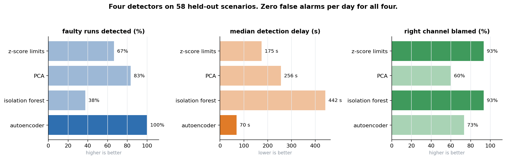
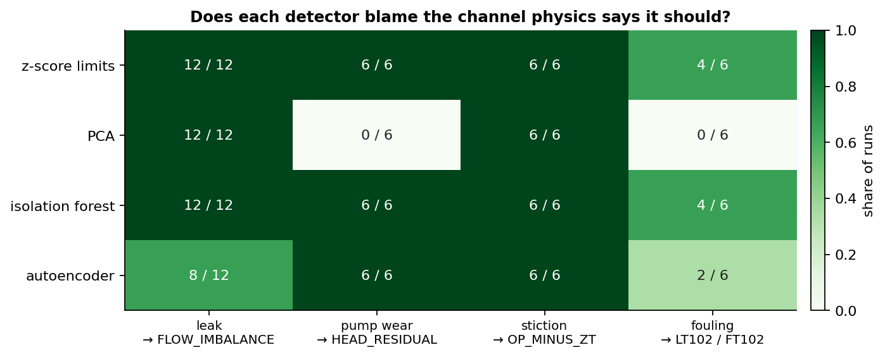
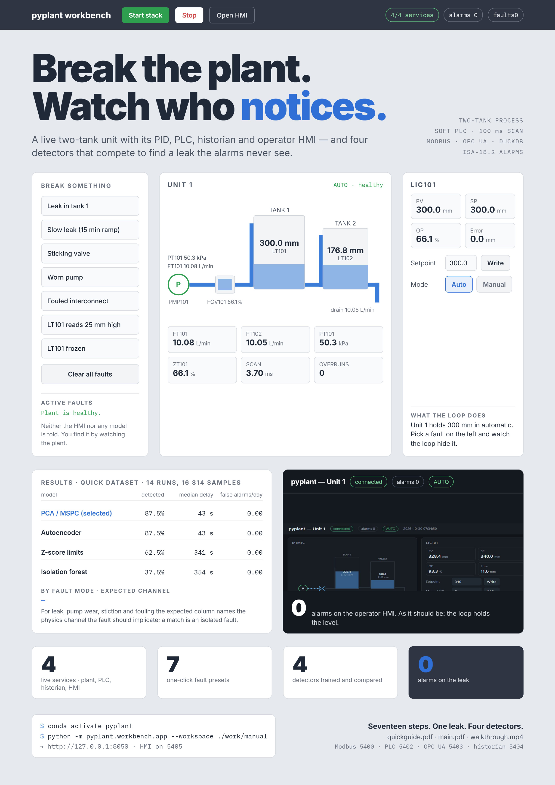

pyplant: A Process Plant You Can Break on Purpose
Fault-detection research has a data problem that is easy to overlook: real plants rarely let you break them. You can't open a leak in a live process to see what your detector does, and public benchmark datasets come with their own quirks and fixed scenarios. So I built a plant I'm allowed to break — a bench-scale process, with the same layers a real one has, that runs on a laptop.
pyplant is a simulated two-tank plant with a soft PLC, a Modbus and OPC UA SCADA stack, a historian, ISA-18.2 alarm management, fault injection, and machine-learning fault detection — all driven from one GUI. It's open source, and nothing in it needs hardware.
The fault you cannot see
The project grew out of one observation. Open a leak in tank 1 while a level controller is running, and this is what happens:

| Tank level | Controller output | |
|---|---|---|
| Before the leak | 300.00 mm | 66.18 % |
| After it settles | 300.00 mm | 75.80 % |
The level returns to setpoint exactly. The controller has absorbed the fault, and its entire signature now lives in the valve position. A detector that watches only the level cannot see this fault at all — and the operator's alarm list stays empty throughout.
In a closed loop, the controller hides the fault you are looking for.
That sentence is the whole reason pyplant exists. It's why every detector in the project is fed the controller output and three physics residuals alongside the raw measurements, and it's the part of the problem I find most interesting from a process-control point of view: a PI controller with integral action gives zero offset to any step disturbance, which is precisely why a leak vanishes from the level.
What's in the plant
A centrifugal pump feeds tank 1 through an equal-percentage control valve; tank 1 drains by gravity into tank 2, which drains to atmosphere. A level controller, LIC101, holds tank 1 at 300 mm. Tank 2 is uncontrolled, so a fault in tank 1 reaches it with a lag.
The controller is a velocity-form PI loop tuned by internal model control — no overshoot, settling in about 40 s. Around that sit four processes speaking the protocols a real plant uses, each started by the workbench and connected to the one before it:
Every signal is declared once, in pyplant/tags.py, with its units, span, scale factor, address, owner and alarm limits. Everything else imports it from there.
Physics & controller
Two tanks, a pump with a quadratic curve, an equal-percentage valve with actuator lag. The pump/valve algebraic loop is solved in closed form, so there is no iteration and no stiffness. The PID uses derivative on measurement, structural anti-windup and bumpless auto/manual transfer.
PLC & field network
A scan engine with drift-free scheduling that reports its own scan time and overruns as tags, plus hysteresis on alarms, an on-delay minimum-flow trip and latching interlocks. The plant and PLC talk Modbus TCP with block reads only, every value passing through one codec.
SCADA, historian & alarms
An OPC UA address space generated from the tag dictionary; a DuckDB historian stored by exception and queried with last-value-carried-forward resampling, so a held signal is never interpolated into a ramp; and a full ISA-18.2 alarm state machine, including the state a boolean can't express — an alarm that cleared before anyone saw it stays visible until acknowledged.
Fault injection
Faults enter through an API the control system cannot see. Neither the operator page nor any diagnosis model is told a fault was injected; the only way to know is to watch the plant.

Eight faults, eight fingerprints
Each fault kind leaves a different signature on the same signals, and each has a physics channel that isolates it:

| Fault | Enters at | What you see | Isolating channel |
|---|---|---|---|
| Leak | process | level recovers, valve opens | FLOW_IMBALANCE |
| Worn pump | process | valve opens to make up lost head | HEAD_RESIDUAL |
| Fouled interconnect | process | valve closes, tank 2 drains down | LT102, FT102 |
| Sticking valve | actuator | sawtooth limit cycle; command and stem disagree | OP_MINUS_ZT |
| Sensor bias / drift / frozen | instrument | reading looks fine; the truth is offset, creeping or dead | reported separately |
| Sensor noise | instrument | always on, as realism; never labelled a fault | — |
Because the workbench also shows ground truth next to what each instrument reports, you can tell a process fault (the two agree, and the fault shows up in the controller output) from a sensor fault (they disagree) at a glance.
Detecting what the controller hides
Four detectors are compared on the same features: z-score limits, PCA (classical MSPC), an isolation forest, and an autoencoder. Each sees 60 s windows summarised into 48 features, computed from nine tags plus three physics residuals. They're trained on normal operation only and judged on runs they have never seen, split by run so overlapping windows can't leak between training and test.
The benchmark is 58 one-hour scenarios: 10 normal runs and seven fault modes, each at three magnitudes with randomised onset and its own seed.

| Method | Faulty runs detected | Median delay | False alarms | Isolation |
|---|---|---|---|---|
| z-score limits | 66.7 % | 175 s | 0 / day | 93 % |
| PCA (classical MSPC) | 83.3 % | 256 s | 0 / day | 60 % |
| Isolation forest | 37.5 % | 442 s | 0 / day | 93 % |
| Autoencoder | 100 % | 70 s | 0 / day | 73 % |
The autoencoder catches every fault, and fastest — the only one of the four that does. That's consistent with the plant being non-linear (square-root drains, a quadratic pump curve, an equal-percentage valve), which a linear subspace like PCA's can't follow. I'd be careful, though: these runs show the gap, not its cause.
The best detector is not the best isolator
Z-score limits and the isolation forest name the right channel far more often (93 %) — while missing most faults outright. The autoencoder detects everything but isolates correctly 73 % of the time.
Choosing a detector is a trade-off, not a ranking: do you need to know that something is wrong, or what?

Who it's for
Students of process control
A fully observable loop you can retune with a short script, then break with one click. Watching integral action absorb a leak teaches more than the transfer-function derivation alone.
Fault-detection researchers
A closed-loop testbed with labelled ground truth, randomised onsets and a run-level train/test split — and a documented path for adding a fifth detector.
Controls engineers and instructors
Connect an external OPC UA client such as UaExpert to the live plant, work through the operator HMI, or give each student their own workspace and base port.
Try it
You need Python 3.11 or newer. Then:
git clone https://github.com/mhmodir/pyplant.git
cd pyplant
python -m pip install -e ".[ml,ui,dev]"
pyplant-workbenchOpen http://127.0.0.1:8050 and work left to right through the five tabs: Quick start (run a leak offline in 10 seconds), Runtime (start the live stack), Faults (break the plant), Data (generate a labelled dataset) and Model (train and compare the four detectors in about 10 seconds). There's also a Docker route: docker compose up --build.
On Windows, keep the speed at 4× or below. Windows schedules sleeps in 15.6 ms steps, so above that the PLC misses its 100 ms deadline and, correctly, reports overruns.
Documentation

What's next
- Live inference. The
HEALTH_INDEX,TOP_CONTRIBandALM_HEALTHtags are declared and the HMI is ready to show them, but nothing publishes them yet. The next step is a service that runs the trained detector on a rolling window from the historian and writes its verdict back over OPC UA, so a diagnosis becomes an alarm. - A second plant. The physics sits behind one interface; a jacketed CSTR or the Tennessee Eastman process would exercise the same stack on a harder problem.
The design notes are, I think, the most interesting read in the repo: a PID that slammed the valve shut on its first scan, a PLC timer that never fired because ten times 0.1 is not 1.0, and a detector judged against the wrong instrument. Each was found by measuring something, and each changed the design.
If pyplant is useful in your work, I'd love to hear how — and which fault you wish it could inject.
Clone it from GitHub, open an issue, or reach out via the contact page.